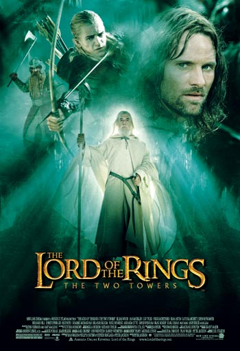

| img |
img_cap |
img_tag |
img_desc_max |
 |
带有中文文本的应用程序截图 |
|图片属性|:#手机截屏#:0.703;#多图拼接#:0.572;#特写#:0.482;#插图#:0.480;#摆拍#:0.478
|文本/特效/贴纸|:#文本#:0.615;#文字#:0.558;#杂志#:0.485
|物体|:#电子屏幕#:0.535;#手机#:0.515;#移动电话#:0.508;#iphone#:0.505;#商品#:0.492
|色彩|:#黑白混合的#:0.509;#白色#:0.485
|
这张图片是一个手机屏幕截图，地图应用中显示了北京的某个位置。在屏幕的顶部中央，有一个地图，显示了北京的多个道路和建筑。在屏幕的底部，有四个导航选项，分别是“打车”、“公交地铁”、“骑行”和“步行”。在“e世界财富中心”旁边，有一个红色的标记，标记旁边是“驾车”和“公交地铁”的选项。在屏幕的下方中部，有三个导航栏，分别是“我”、“导航”和“设置”。在“我”的导航栏中，有“位置”、“城市”、“导航”和“设置”四个选项。在“导航”选项下面，有“常用地址”、“驾车”和“步行”三个选项。在“设置”选项下面，有“地图”、“更多”、“关于”和“帮助”四个选项。
|
 |
带有中文文本的应用程序屏幕截图 |
|图片属性|:#手机截屏#:0.649;#多图拼接#:0.559;#反转片#:0.470;#摆拍#:0.464;#广告#:0.464;#纯色背景#:0.461
|文本/特效/贴纸|:#文本#:0.558;#文字#:0.545;#美文#:0.469;#杂志#:0.468
|色彩|:#白色#:0.544;#黑白混合的#:0.479;#纯色#:0.471
|物体|:#商品#:0.474;#电子屏幕#:0.473
|
这张图片是一个手机截图，是一个导航画面和评价页面的混合图。在上面的导航页面中，显示的是从厦门高崎国际机场到土丁场的路线信息。在下面的评价页面中，显示的是用户对某个企业“厦门门窗谢先生”的评价，评价内容为“服务周到
路线优质”，同时还有一张黄色地图标记了该企业“厦门门窗谢先生”的位置。 |
|
一张写有中文的身份证放在木桌上 |
|物体|:#身份证#:0.807;#银行卡#:0.529;#高铁#:0.417;#动车#:0.407
|图片属性|:#证件照#:0.648;#结婚照#:0.413
|文本/特效/贴纸|:#条形码#:0.476;#二维码#:0.454
|人|:#律师#:0.472;#快递员#:0.453;#外卖员#:0.450;#警察#:0.433;#大学生#:0.419
|描述|:#东方明珠#:0.423
|动作/行为|:#拆迁#:0.414
|
这张图片是一张中华人民共和国的居民身份证，上面印有国徽，证上有效期至2030年5月3日。 |
 |
一个写着旧市场圣索非亚的标志 |
|色彩|:#蓝色#:0.650;#黑色#:0.531;#纯色#:0.528;#冷色调#:0.525;#黄色#:0.501;#紫色#:0.484;#黑白混合的#:0.471;#白色#:0.460
|图片属性|:#纯色背景#:0.564
|文本/特效/贴纸|:#文本#:0.503;#条形码#:0.468;#文字#:0.458
|材质|:#金属#:0.494
|服装/饰品|:#胸针#:0.483
|物体|:#商品#:0.478
|
这张图片是"Sundries"的标志，背景是蓝色，字体是金色，字体的左边有一个向右的箭头，上面写着"old market"，下面的文字是"Sundries"。 |
 |
霓虹灯标志上写着餐厅名称 |
|地点/场所|:#游戏厅#:0.624;#商店#:0.544;#电影院#:0.535;#KTV#:0.510;#店#:0.502;#商场#:0.480;#酒吧#:0.472;#迪士尼#:0.471
|物体|:#霓虹灯#:0.600;#玩具#:0.471
|活动/兴趣爱好|:#电子游戏#:0.527;#漫展返图#:0.485;#购物#:0.476
|图片属性|:#涂鸦#:0.498;#炫彩#:0.487
|
这张图片是一个在暗蓝色的墙面上展示的霓虹灯标志。标志上的文字是“FENDERS
DINER”，其中“FENDERS”在上部，”DINER”在下部。这个标志是亮粉色和亮绿色的。标志的字体是粗体，也很明亮。背景墙是深蓝色的。 |
 |
蓝色建筑侧面的商店标志 |
|形状|:#圆#:0.799;#曲线#:0.543
|材质|:#金属#:0.624
|色彩|:#蓝色#:0.578;#黄色#:0.563;#金色#:0.555;#红色#:0.543;#黑色#:0.538
|活动/兴趣爱好|:#飞盘#:0.566
|物体|:#鼓#:0.559;#商品#:0.540;#水滴#:0.537
|身体|:#头#:0.543
|图片属性|:#特写#:0.542;#卡通#:0.537
|
这张图片是一个 Shop Rite 商店的标志，背景是蓝色的木墙。标志上的文字 Shop Rite
采用了黑色的字形，其中“S”和“T”是用一个圆形的图形表示的，下面拖着一个有六个点的圆圈，这个图形看起来像一个小车。标志的底色是红色，边框是黄色的。 |
 |
白色背景上的hcad建筑标志 |
|色彩|:#蓝色#:0.607;#黑白混合的#:0.567;#黑色#:0.563;#白色#:0.555;#冷色调#:0.547;#纯色#:0.518
|文本/特效/贴纸|:#文本#:0.590;#杂志#:0.517;#文字#:0.516;#条形码#:0.493
|物体|:#商品#:0.543;#书#:0.528
|图片属性|:#纯色背景#:0.536;#海报#:0.504
|材质|:#金属#:0.523
|
这张图片是-hardco工业建筑的标志。这是一个蓝色的六边形，六边形的各个面上分别印着大写的英文字母。这些字母是蓝色的，与六边形的背景色形成鲜明对比。这些字母从左至右分别是A、R、D、C、O、
。字母的下方是白色的字体，写着“industrial construction”。整个标志的背景是白色。 |
|
一个标志，上面写着“冰饮料”。 |
|物体|:#玩具手办#:0.529;#乐高#:0.516;#手办#:0.509;#书#:0.508;#玩具#:0.499
|活动/兴趣爱好|:#漫展返图#:0.521;#创作#:0.457
|图片属性|:#油画#:0.501;#静物摄影#:0.473;#壁画#:0.467;#水彩#:0.460
|地点/场所|:#工作室#:0.501;#美术馆#:0.498;#博物馆#:0.478
|文本/特效/贴纸|:#杂志#:0.458
|
这是一张墙壁上的广告牌照片，广告牌是蓝色的，上面写着“cold
drinks”，广告上的字体非常大，易于阅读。广告中的饮料有两个，一个是柠檬形状的，另一个是绿色的，瓶子旁边都有气泡，仿佛是在慢慢地溢出到冷饮中。广告下方有三行字，“thirst
quenching...refreshing”，用白色字体进行区分。整体广告牌看起来很醒目，旨在吸引人们的注意力并推广这种冷饮。 |
 |
一个穿着外套的男人的特写镜头 |
|图片属性|:#电影感#:0.624;#科幻电影#:0.588;#多图拼接#:0.547;#海报#:0.538;#反转片#:0.533
|人|:#杀手#:0.617;#单人#:0.579;#演员#:0.577;#男子#:0.557;#人#:0.541;#大爷#:0.535
|描述|:#帅#:0.539;#俊朗#:0.520
|身体|:#头#:0.525;#脸#:0.520
|
这张图片是一张红色方框框选的照片，照片中的男子穿着大衣，带着帽子，眼神坚定地看向前方。男子的颈部戴着一条领带，他的表情和姿态都展现出他的成熟和自信。背景中有其他人，但是被红色方框框选的焦点只有照片中的这位男子。
|
|
一个戴着牛仔帽的男人坐在桌旁 |
|人|:#老人#:0.743;#老大爷#:0.741;#大爷#:0.733;#老年#:0.684;#男子#:0.673;#单人#:0.619;#农民#:0.569;#人#:0.567;#路人#:0.545;#男生#:0.536;#民工#:0.535;#杀手#:0.530;#帅哥#:0.523
|情绪/氛围|:#沧桑#:0.537
|描述|:#帅#:0.529
|
这张图片是影视明星约翰·韦恩（John
Wayne）的头像照片。照片中，约翰·韦恩坐在棕色的椅子上，穿着卡其色的风衣和棕色的牛仔帽，领口围着灰色的围巾。他的双手紧握在一起，放在桌子上，表情看起来非常认真。整个画面被一个红色的矩形框包围。 |
|
一个穿着制服的男人的特写镜头 |
|色彩|:#红色#:0.619;#黑暗#:0.530;#黑色#:0.495
|人|:#杀手#:0.583;#单人#:0.491;#保镖#:0.483;#男子#:0.479
|身体|:#眼#:0.517;#脸#:0.508;#头#:0.484
|图片属性|:#科幻电影#:0.509;#电影感#:0.494;#反转片#:0.478
|情绪/氛围|:#愤怒#:0.496;#害怕#:0.482
|
这张图片是由四个部分组成的，最外面的是一个红色的矩形框，里面是一个杰克·吉伦哈尔的头像，背景中是一张他坐在黑色皮质椅子中的照片，这张照片是在蓝色背景下拍摄的。 |
 |
一个戴着颈托躺在床上的男人 |
|色彩|:#红色#:0.703
|身体|:#脸#:0.588;#眼#:0.564;#头#:0.549;#皮肤#:0.521
|情绪/氛围|:#害怕#:0.568;#表情#:0.562;#悲伤#:0.557;#愤怒#:0.557
|描述|:#丑#:0.554
|人|:#单人#:0.525;#人#:0.511;#杀手#:0.505
|动作/行为|:#笑#:0.524
|物体|:#面具#:0.511
|
这张图片是一个男演员，躺在床上，颈部戴着一个白色颈托，他的嘴巴张着，似乎在喊叫或者哭泣。图片周围有一道红色边框。 |
 |
两张戴着白色假发的女人的照片 |
|身体|:#金发#:0.566
|色彩|:#红色#:0.554
|服装/饰品|:#Cosplay#:0.551;#裘皮#:0.499
|图片属性|:#人像摄影#:0.528;#人像#:0.516;#街拍故事#:0.491
|描述|:#洛丽塔#:0.518
|人|:#老年#:0.515;#老人#:0.514;#老大爷#:0.507;#大爷#:0.503;#摄影师#:0.497
|动物|:#泰迪#:0.509
|情绪/氛围|:#愤怒#:0.496
|
这张图片是一个电视剧或电影中的一个场景。画面中，一个年轻的女孩（红色方框内）穿着古装，留着白色的长发，发型像玛丽·安托瓦内特。她的装扮很华丽，穿着浅蓝色的古装，肩上披着一件白色披肩，头上戴着繁复的发饰。她的项链和手链也很精致，她的耳朵上还戴着银色的耳环。她的装扮给人留下了深刻的印象。
|
 |
一辆蓝白相间的有轨电车在车站附近行驶。 |
|物体|:#公交车#:0.651;#公交#:0.651;#汽车#:0.564;#车辆#:0.560;#轻轨#:0.559;#火车#:0.543;#面包车#:0.520
|地点/场所|:#车站#:0.569;#火车站#:0.545;#地铁站台#:0.532;#站台#:0.528;#地铁车厢(内部)#:0.517;#地铁站#:0.514;#铁路#:0.508
|活动/兴趣爱好|:#雪车#:0.515
|
这张图片展示了一条有轨电车线路，一辆蓝白相间的有轨电车正在运行。有轨电车在轨道上占据了大部分画面，背景是树木和一座街灯。此外，图片的左侧还有一辆车的尾部。在画面的右下角，有一块防水路肩石。 |
|
一群人看着一个戴着帽子的男人在棒球场上打 |
|地点/场所|:#棒球场#:0.841;#足球场#:0.605;#田径场#:0.594;#体育场#:0.561;#操场#:0.541
|活动/兴趣爱好|:#棒球#:0.714;#网球#:0.585;#高尔夫#:0.557;#橄榄球#:0.540;#保龄球#:0.520;#体育运动#:0.512;#标枪#:0.510;#乒乓球#:0.500;#铅球#:0.497
|物体|:#卡丁车#:0.508
|
这张图片展示了一个正在进行的棒球比赛。场上有数名球员和裁判，其中一名黑人男性握着棒球棒，准备打击。场地上有多个观众，有些人在场边观看，有些则在球员休息室的窗户旁观看。还有数个水瓶分布在球场各处，可能是球员们随时补充水分的饮水壶。
|
 |
一群大象走在一条土路上 |
|动物|:#大象#:0.960;#长颈鹿#:0.596;#骆驼#:0.594;#动物#:0.569;#野生动物#:0.558;#猪#:0.554;#鹿#:0.547;#老虎#:0.541;#马#:0.537;#蚂蚁#:0.530;#牛#:0.527;#羊#:0.515;#乌龟#:0.514
|风景/环境|:#云#:0.509
|地点/场所|:#动物园#:0.503
|
这张图片展示了一群在野外的非洲小象。它们大部分被泥沙覆盖，看起来非常有趣。图片正中，有一只小象正面对着镜头，鼻子伸出来，短而粗的象牙清晰可见。这只小象的两只小耳朵都竖立起来，眼睛看着镜头。
除了正对镜头的小象外，图片左右两侧还有其他小象。有的小象只露出一部分身体，有的完全被泥沙覆盖，看起来像是在玩泥沙。背景是一片土黄色和棕绿色相间的森林，与小象们所处的环境相得益彰。
|
 |
一个骑摩托车的人在路上。 |
|物体|:#摩托车#:0.735;#自行车#:0.593;#单车#:0.581;#赛车#:0.520;#卡丁车#:0.518;#车辆#:0.516;#汽车#:0.513;#交通工具#:0.505;#卡车#:0.498
|活动/兴趣爱好|:#骑行#:0.661;#越野#:0.507;#自驾越野#:0.495
|地点/场所|:#公路#:0.511;#马路#:0.486;#路上#:0.485
|
这张图片展示了一位摩托车手在公路上飞驰。摩托车手穿着白色和绿色的皮夹克，戴着白色头盔，专注地驾驶着他的摩托车。摩托车疾驰时，空气在车轮周围喷涌，营造出强烈的运动氛围。
除了摩托车手，还有几个观众在场，他们聚精会神地看着比赛。观众中有几个人分别站在右侧的草坪上，其中有些靠近篱笆线。在图片的远处，还可以看到两个橙色衬衫的人。
|
|
一个男孩在滑板上玩把戏。 |
|活动/兴趣爱好|:#晨练#:0.640;#滑板#:0.557;#跑步#:0.540;#骑行#:0.532;#轮滑#:0.530;#爬山#:0.512
|动作/行为|:#行走#:0.563;#爬楼#:0.540;#徒步#:0.538
|人|:#路人#:0.538;#行人#:0.531;#大爷#:0.521;#单人#:0.519
|地点/场所|:#户外#:0.530
|图片属性|:#街拍#:0.509
|
这张图片展示了一位年轻男子穿着黑色衬衫和牛仔裤，戴着棒球帽，在一片开阔的公园或操场上玩滑板。他骑着滑板，身体前倾，似乎在享受滑板技巧的挑战。
周围的环境包括一片大树的森林，为这个开放的空地提供了自然的边界。公园里还有其他几个人，他们相距较远，分散在不同的位置。一辆汽车停在场地外，可能是在附近的家庭或商家。
|
 |
一个女人站在几串香蕉前微笑。 |
None |
这张图片中，一位穿着彩色上衣的女士微笑着站在一堆黄色的香蕉前面。女士旁边是两堆黄色的香蕉，她向前伸着右手，似乎在欢迎顾客。图片的背景是一栋黄色墙面的建筑。 |
 |
房间里三个人的旁边有一个穿着蓝色衣服的男人在看着一个拿着杯子的人 |
|活动/兴趣爱好|:#酒店聚餐#:0.615;#茶艺#:0.591;#打牌#:0.543
|地点/场所|:#茶馆#:0.581;#酒吧#:0.551
|食物|:#葡萄酒#:0.578;#下午茶#:0.572;#酒#:0.559;#茶#:0.552;#晚餐#:0.537
|时间/事件/节日|:#婚礼纪实#:0.574;#结婚#:0.535
|图片属性|:#家庭摄影#:0.561
|团体/组织|:#家庭#:0.554
|物体|:#茶具#:0.543
|
这张图片展示了一群男人围坐在一个质朴的木制餐桌旁，一起享受美食和饮品。总共有五个人，有的在谈话，有的在吃饭。
在餐桌上，你可以看到各种饮品和餐点。具体来说，有三个咖啡杯（其中一个杯子被白色咖啡杯覆盖），一个中央有果盘的水果，还有面包。此外，餐桌上还有一个苹果，似乎每个人都可以享受一些水果。餐桌上还有一个钟表，似乎被放置在适当的位置以方便查看时间。
这群人看起来非常友好，并且正在度过一个愉快的时光。
|
|
一只猫站在车库里的汽车上。 |
|动物|:#流浪狗#:0.584;#流浪猫#:0.569;#狗#:0.541;#狗狗#:0.532;#宠物狗#:0.522;#羊#:0.506;#猫#:0.503;#动物#:0.502;#小狗#:0.499
|物体|:#车辆#:0.555;#汽车#:0.543;#面包车#:0.518
|人|:#匠人#:0.519;#车模#:0.511
|图片属性|:#拍猫党#:0.499
|
这张图片展示了一个车库内的场景。在焦点上，有一只灰白相间的猫站在一辆汽车的车顶上。这只猫看起来很警惕，它有短毛、条纹手臂和白色的爪子。
在背景中，右侧有一个开放的抽屉，下方还有一些工具和物品，看起来像是在维修或保养汽车。左侧有一个灯和一个盒子，以及一个放置杂物的区域。整个场景给人一种生活化的感觉，展示了猫咪的好奇心以及车库内的日常活动。
|
|
一个穿着蓝色夹克的男人站在十字路口的红绿灯前。 |
|地点/场所|:#路口#:0.642;#大街#:0.598;#马路#:0.568;#斑马线#:0.559;#街道#:0.557;#步行街#:0.538;#停车场#:0.518;#天桥#:0.516
|人|:#行人#:0.600;#路人#:0.511
|风景/环境|:#街景#:0.563
|物体|:#公交#:0.550;#公交车#:0.545;#车流#:0.537
|图片属性|:#扫街#:0.525
|
这张图片展示了一个繁忙的城市街道，有人行道和自行车道，路上有各种车辆行驶。一个穿着牛仔裤和黑色衬衫的男人站在路边，旁边是一个黑色的路灯柱。
在街道的一侧，有三辆汽车、一辆自行车和一辆摩托车行驶。另外，还有三个人在街道上，其中一个人正在过马路。
图片中还显示了一个垃圾桶，它位于照片的左下角。此外，有一个交通灯显示为绿色，这表明该车道是开放的。
总的来说，这张图片描绘了一个繁忙但秩序井然的城市环境。
|
 |
一个装满意大利面、蔬菜和葡萄的塑料容器。 |
None |
这张图片展示了一个紫色的托盘，里面装着四个颜色各异的食物容器，每个容器内装着不同的食物。食物种类有葡萄、肉酱、沙拉和胡萝卜。葡萄容器呈蓝色，肉酱容器带有橙色盒盖，位于左手边；沙拉容器是大号的方形容器，装有绿色和红色的蔬菜沙拉；胡萝卜容器装有橙色的胡萝卜条。托盘下方有两把银色的餐具，容器和餐具都放在一个紫色的托盘上。
|
 |
几辆公共汽车停在城市街道上，背景是高楼。 |
|地点/场所|:#天桥#:0.658;#路口#:0.628;#马路#:0.607;#公路#:0.579;#大街#:0.572;#大道#:0.569;#街道#:0.559;#桥#:0.558;#高速#:0.517
|物体|:#车流#:0.613;#轻轨#:0.530
|风景/环境|:#街景#:0.565;#天空#:0.550;#城市风光#:0.524;#蓝天白云#:0.518
|
这张图片展示了一个停车场，里面有数辆巴士，这些巴士有白色的，也有绿色的，它们停放在停车场的不同位置。停车场的出口有一条城市街道，道路上有一辆巴士在行驶，还有数辆巴士停在街道两侧。
在停车场内，一些巴士是大型的，占据了停车场的较大空间，而另一些巴士则相对较小。此外，图片中还有一些电线，可能是用来供电的，还有几个路牌和限速标志，提醒司机遵守交通规则。
|
 |
一个橙色的消防栓坐在草地上。 |
|地点/场所|:#庭院#:0.660;#园林#:0.643;#花园#:0.621;#院子#:0.617;#公园#:0.573;#农家#:0.561;#亭子#:0.558;#露台#:0.555;#植物园#:0.555;#别墅#:0.550;#庄园#:0.547;#乡村建筑#:0.531
|风景/环境|:#小桥流水#:0.542;#田园风光#:0.538
|植物|:#灌木#:0.533
|
None |
|
两个人在土路上骑摩托车 |
|活动/兴趣爱好|:#骑行#:0.698;#登山#:0.584;#爬山#:0.579;#自驾越野#:0.521;#郊游#:0.509
|物体|:#单车#:0.626;#自行车#:0.601
|风景/环境|:#山路#:0.594;#天空#:0.575;#蓝天白云#:0.539;#云#:0.526
|动作/行为|:#徒步#:0.588
|地点/场所|:#路上#:0.574;#公路#:0.536;#户外#:0.517
|
这张图片展示了一位摩托车手骑着摩托车行驶在山上的土路上。路上只有摩托车手和远处的一位骑自行车的人。天空中布满了云朵，将画面装点得十分美丽。
图中还可以看到一些绿色的山丘、植被和一座静止的红色自行车。摩托车手的服饰和摩托车的颜色在图片中不太明确，但可以确定摩托车手正在享受着驾驶的乐趣。
|
 |
一个穿着短裤的男人推着自行车走在房屋外的道路上 |
|地点/场所|:#胡同#:0.616;#小巷#:0.582;#街角#:0.570;#老街#:0.567;#街巷#:0.552;#大街#:0.548;#路边摊#:0.547;#街道#:0.547;#街区#:0.537
|图片属性|:#扫街#:0.599
|活动/兴趣爱好|:#赶集#:0.586;#摆摊#:0.533
|人|:#大爷#:0.545;#路人#:0.541;#老大爷#:0.531
|
这是一张黑白照片，拍摄于一个村庄。照片中的主体是一位黑皮肤的男子，他身穿白色裤子，光着上身，头发卷曲，正在推动一辆自行车。自行车的车头冲向画面，男子右手扶着自行车，左手在身后。画面的右侧有一些远处的人物，衣服上有红、白、蓝等颜色。远处的房屋有红白相间的颜色，左侧有一个门洞，门口有柱子和隔板，上面有汉字。门洞上方有一个标志，似乎是房屋或店铺的招牌。
|
 |
孩子们在码头上玩棋盘游戏。 |
|活动/兴趣爱好|:#晨练#:0.524;#跨栏#:0.515
|地点/场所|:#天台#:0.522;#栈桥#:0.505
|色彩|:#黑白混合的#:0.519
|人|:#行人#:0.511;#路人#:0.507
|情绪/氛围|:#孤独#:0.503;#孤单#:0.490
|图片属性|:#剪影#:0.497;#街拍故事#:0.495;#极简主义#:0.485
|动作/行为|:#坐#:0.482;#二郎腿#:0.482
|物体|:#栏杆#:0.482
|
这是一张黑白色调的照片，展示了人们在户外玩耍和休息的场景。照片中，一个小女孩和一个小男孩在一张大棋盘上玩跳棋，这个棋盘由黑色线条划分出不同的区域。周围放置了六把椅子，其中四把有人坐，两男两女，还有两把空着。图片最左边有一个带鱼翅标志的垃圾桶，后面站着一个男人和一个女人，他们身后有一块牌子，上面写着“美国海军”，应该是在描述这个男人是美国海军的情景。最右边有一个带着帽子的男人坐在椅子上，面前摆放着一个像是望远镜的物品。图片的背景是海港，有几艘模糊的船只，其中最右侧的白色船只体积最大。
|
 |
一个灰色和银色的消防栓，停在路边。 |
|地点/场所|:#大街#:0.602;#路口#:0.598;#街道#:0.585;#街角#:0.584;#马路#:0.582;#小巷#:0.546;#路上#:0.528;#斑马线#:0.527;#大道#:0.516
|风景/环境|:#街景#:0.585
|人|:#行人#:0.573;#路人#:0.514
|动物|:#流浪狗#:0.532
|图片属性|:#扫街#:0.528
|物体|:#路灯#:0.518
|
这张图片展示了一个灰色和橙色的消防栓，站在靠近道路的人行道边缘。消防栓上头是橙色的，非常显眼。马路对面有几辆汽车和一个人，还有其他的设施，如电话亭和垃圾桶。此外，图片左侧有一棵树，右侧有一座房子，增加了这个场景的自然元素。整张照片的构图非常清晰，让人感受到城市的安静氛围。
|
 |
一个赤膊上阵的男人在滑板上表演魔术。 |
None |
这张图片展示了一位半空中的滑板运动员。他穿着牛仔裤，衬衫敞开，赤裸着上身，正在用滑板进行表演。滑板运动员的脚在滑板上，手掌张开，似乎在保持平衡或进行跳跃动作。他后背朝向观众，形成了一个独特而动态的视角。
背景是美丽的天空，左下角的树丛增添了一些自然元素。滑板场的砖石地板和不规则曲线提供了一个有特点的场地，让滑板运动员能够展示他们的技巧和灵活性。
|
|
广告中一男和女网球运动员在打。 |
|活动/兴趣爱好|:#网球#:0.808;#羽毛球#:0.702;#体育运动#:0.675;#体育#:0.663;#乒乓球#:0.570;#排球#:0.515;#高尔夫#:0.514;#篮球#:0.493;#足球#:0.473
|人|:#运动员#:0.528
|地点/场所|:#足球场#:0.498;#田径场#:0.491;#棒球场#:0.482
|动物|:#鸽子#:0.482;#海鸥#:0.470
|
这是一张关于网球运动的广告宣传页面，广告中有一位女网球运动员正在打网球，左脚穿着一只白灰相间的网球鞋，准备击打黄色的网球。广告的标题是“get into top gear with
adidas”，下方的标语写着“adidas the science of sport”。整个广告以深蓝色为背景。 |
 |
一台笔记本电脑，屏幕上有文字。 |
|物体|:#显示器#:0.789;#电子屏幕#:0.728;#笔记本电脑#:0.725;#键盘#:0.702;#平板电脑#:0.690;#桌面#:0.641;#桌子#:0.534;#手机#:0.523;#设备#:0.511;#电视#:0.499;#座位#:0.483;#移动电话#:0.480
|地点/场所|:#游戏厅#:0.522
|活动/兴趣爱好|:#电子游戏#:0.493
|图片属性|:#手机截屏#:0.477
|
这张图片展示了一个打开的银色 Dell
笔记本电脑，屏幕显示蓝色的“inspiron”字样以及一个小时钟图标。笔记本电脑的品牌和型号清晰可见，看上去非常现代和时尚。
图中还有一个小纸片放在桌子上，上面写着“下雨了，记得带伞”。这张纸条似乎是在提醒人们注意天气变化，带好雨具。整个场景给人一种工作或娱乐的温馨感觉。
|
 |
一个三层的白色结婚蛋糕，上面有粉色和白色花朵。 |
|食物|:#蛋糕#:0.756;#生日蛋糕#:0.730;#甜点#:0.711;#甜食#:0.612;#糕点#:0.596;#西餐#:0.530;#冰淇淋#:0.507;#菜肴#:0.493;#食物#:0.493
|时间/事件/节日|:#生日#:0.614
|活动/兴趣爱好|:#烘焙#:0.611;#烹饪#:0.495
|描述|:#美味的#:0.515
|人|:#吃货#:0.505
|物体|:#蜡烛#:0.493
|
这张图片展示了一个三层的婚礼蛋糕，蛋糕整体呈白色，散发出一股甜美的气息。蛋糕上装饰着各种装饰物，例如各种粉红色的花朵、绿色的植物和白色的花瓣。这些装饰使得蛋糕看起来非常漂亮，适合作为婚礼上的焦点。蛋糕顶部的装饰非常特别，有白色的花朵和可能的绿色植物，给人一种清新的感觉。
|
 |
厨房里的不锈钢冰箱。 |
|物体|:#冰箱#:0.744;#微波炉#:0.585;#家具#:0.574
|地点/场所|:#家居#:0.679;#厨房#:0.654;#室内#:0.628;#家装#:0.577;#房间#:0.570;#公寓#:0.567;#装修#:0.563
|时间/事件/节日|:#居家#:0.668;#现代#:0.601
|材质|:#玻璃#:0.644;#金属#:0.614
|色彩|:#透明#:0.569
|
这张图片展示了一个厨房。厨房里有一台不锈钢双门冰箱，冰箱门把手是黑色的。冰箱位于一个木橱柜旁边，橱柜是棕色的，上面放了一盒纸巾。微波炉靠近橱柜，它是白色的。厨房的台面放了一些杂物，如橙色的花朵和黑色的杯子。墙上还挂着一盒纸巾。
|
 |
一辆垃圾车在街道上行驶。 |
|地点/场所|:#马路#:0.623;#公路#:0.611;#路上#:0.584;#大道#:0.563;#路口#:0.559;#大街#:0.549;#路面#:0.539;#街道#:0.525;#斑马线#:0.508
|风景/环境|:#街景#:0.550;#山路#:0.542
|物体|:#卡车#:0.532;#车辆#:0.521
|植物|:#树#:0.515
|活动/兴趣爱好|:#骑行#:0.514
|
这张图片是现实世界中街道的截图，使用了Google
Maps街道视图功能。图片中可以看到一辆垃圾车正在道路上行驶，路边有一些路缘和电线杆。图像的版权在底部右侧标注，同时还有一个日期戳标记在图片的右上角。图片中还有一面棕色的木制围栏和一个白色的小木制围栏，附近还有一些房屋和树木。
|
 |
一个杆子上有一个黄色的标志，上面写着“小心行走” |
|地点/场所|:#路口#:0.646;#马路#:0.604;#大街#:0.591;#街道#:0.567;#天桥#:0.552;#大道#:0.541;#停车场#:0.537;#斑马线#:0.532;#步行街#:0.529;#公路#:0.529
|物体|:#公交车#:0.573;#公交#:0.573;#车流#:0.563
|风景/环境|:#街景#:0.571
|人|:#行人#:0.537
|
这张图片展示了一个交通信号杆，杆子上有中文和英文的街道标识，还画有绿色的人形和红色的人形图案。信号杆的附近有几条白色线段，似乎是在描述某个停车场的区域。
在信号杆的两侧，有几辆汽车停放在马路上。从图片中可以看出，这应该是一个繁忙的十字路口。而信号杆上的中英文标识，可能是为了向外国游客或驾驶者提供方向指引和交通警告。
|
 |
一群孩子站在雨伞下，而一个男人在周围。 |
|活动/兴趣爱好|:#赶集#:0.604;#摆摊#:0.552;#逛街#:0.533
|图片属性|:#扫街#:0.580;#街拍#:0.551;#街拍故事#:0.541
|地点/场所|:#步行街#:0.580;#大街#:0.542;#街道#:0.541;#小吃街#:0.539;#商业街#:0.535;#美食街#:0.534
|人|:#行人#:0.568;#路人#:0.548
|时间/事件/节日|:#庙会#:0.534
|
这张图片展示了一群人在雨中聚集在某个地方，他们站在一个黑暗的街道上，一些人拿着黑色和红色的雨伞。人群中心有一位长者，一位穿着黑白斑马纹外套的女性和三个孩子站在一起。这个场景似乎是一个小镇活动，因为附近有一个书摊和一个招牌。
在场景中，一些人戴着帽子，一些人拿着手机（可能在拍摄或拍照），还有一些人拿着黑色的雨伞。街道两旁有建筑物，背景中可以看到一串灯串，为夜晚的场景增添了额外的灯光。
|
|
浴室里有一个橙色水桶，旁边有马桶。 |
|地点/场所|:#卫生间#:0.746;#公寓#:0.685;#住房#:0.682;#家居#:0.669;#室内#:0.668;#房间#:0.638;#装修#:0.631;#家装#:0.617;#厨房#:0.598;#卧室#:0.585;#宿舍#:0.572
|时间/事件/节日|:#居家#:0.696;#现代#:0.548
|图片属性|:#室内设计#:0.606
|物体|:#家具#:0.586
|
这张图片展示了一个老式浴室的内部。主要的设施是一个白色的座式马桶，它敞开着座盖，露出瓷质的马桶底部。浴室的地板是绿色的，墙壁铺满了白色的瓷砖。
一个橙色的桶放在一个白色的凳子上，凳子位于马桶对面的地方。此外，图片左侧有一个水桶，中间上方墙壁上挂着一个水桶，以及一个带喷漆的橙色桶。
墙上还挂着一些水管和器件。总体来说，这个浴室看起来有些老旧，需要进行一些更新和维护。
|
 |
一座钟楼，上面有一个时钟。 |
|风景/环境|:#天空#:0.613;#蓝天白云#:0.570;#云#:0.548;#云层#:0.508;#街景#:0.492
|地点/场所|:#建筑#:0.534;#欧式建筑#:0.526;#楼#:0.521;#天台#:0.509;#办公楼#:0.495;#楼顶#:0.494;#外景#:0.491;#高楼#:0.484
|动作/行为|:#爬楼#:0.498;#仰望#:0.492
|
这张图片展示了一座带有时钟和旗杆的塔楼。时钟被设计成圆形，并且有两个颜色，一个是蓝色，另一个是红色。时钟的读数是3点25分。
塔楼的屋顶是灰色的，顶部有一个白色的天线。天线的形状是细长的圆柱形，直插云霄。旗杆是白色的，位于塔楼的屋顶中央，周围没有看到悬挂旗帜。
图片的背景是蓝天和白云。天空左上角有两朵连在一起的白云，中间部分是深蓝色的天空和白云相间。右上角有展翅飞翔的鸟儿，其中有一只黑色的鸟和一只白色的鸟。
|
 |
一个苹果放在桌子上，旁边放着一部电话。 |
|图片属性|:#静物摄影#:0.676;#弱光#:0.510
|食物|:#水果#:0.623;#果汁#:0.558;#饮料#:0.552;#苹果#:0.537;#食物#:0.517;#橙子#:0.494
|色彩|:#黑暗#:0.533;#黑色#:0.502
|时间/事件/节日|:#夜#:0.512;#深夜#:0.494
|物体|:#灯#:0.490;#桌子#:0.484;#桌面#:0.481
|
这张图片展示了一个木制桌子，上面有一张白纸、一个放在上面的手机、一个绿色苹果、一只红色咖啡杯以及一个罐装饮品。手机和白纸在图片的中央，绿色苹果在左边，而红色咖啡杯在图片的中间偏右位置。
桌子下方有一根电线，图片左下角还有一根电线。整个场景光线较暗，呈现出一种静物的感觉。
|
 |
一群人站在客厅里，手里拿着遥控器。 |
|人|:#多人#:0.670;#人#:0.550;#乐队#:0.529;#朋友#:0.527;#人群#:0.517;#姐妹#:0.516;#同学#:0.507;#路人#:0.498;#保镖#:0.496;#双人#:0.490;#双人#:0.490
|图片属性|:#合影#:0.576
|团体/组织|:#家庭#:0.532
|活动/兴趣爱好|:#打牌#:0.518;#摔跤#:0.511
|
这张图片展示了一个客厅的内部，几个孩子和一位家长在一起玩耍。四个孩子和一位家长共计五个人出现在图片中，三个男孩和一个女孩在中央玩着一个 Wii
游戏机，而另一个男孩和那位家长站在旁边观看。所有的人都聚精会神地盯着 Wii
游戏机的屏幕。
客厅的中央放着一个蓝色的折叠椅，周围是其他的椅子和沙发。墙壁上挂着一扇窗户，但是窗帘被拉上了。房间里的颜色主要是米色和棕色。最后，图片的右侧有一个垃圾桶。 |
|
浴室里有一个马桶，上面有个盖子。 |
|形状|:#圆#:0.584
|色彩|:#白色#:0.567;#黄色#:0.552;#粉色#:0.480
|物体|:#设备#:0.548;#商品#:0.516;#交通工具#:0.481
|地点/场所|:#家居#:0.541;#卫生间#:0.514;#室内#:0.485
|图片属性|:#特写#:0.520;#简约#:0.484
|材质|:#金属#:0.516;#陶瓷#:0.514
|时间/事件/节日|:#居家#:0.495
|
这张图片展示了一个白色瓷砖卫生间的内景。卫生间的一个角落里放着一个白色的厕所，正对着墙壁上的一个卫生间的镜子。镜子顶部的防护栏由两个环扣挂在一起，上面还有一个钩子。卫生间的地面铺着白色瓷砖，给人一种整洁而简单的感觉。
|
 |
一排摩托车停在城市街道上。 |
|物体|:#摩托车#:0.737;#汽车#:0.575;#车辆#:0.571;#自行车#:0.541;#交通工具#:0.535;#卡车#:0.526;#单车#:0.524;#卡丁车#:0.517;#赛车#:0.510;#轿车#:0.509;#吉普车#:0.501;#面包车#:0.497
|活动/兴趣爱好|:#骑行#:0.572;#越野#:0.510
|地点/场所|:#马路#:0.485
|
这张图片展示了一排摩托车和摩托车轮子，停放在人行道上。这一排摩托车呈现出一列纵列，轮子排在最外层，摩托车轮子在轮子里。摩托车的形状和颜色各异，让人联想到个性和风格的多样性。这张图片捕捉了静态的存在，每一辆摩托车和轮子都清晰可辨，显示了精心组织和秩序。
|
 |
一张上面有红色印章的收据 |
None |
这是一张由广州市税务局出具的机动车发票，上面开具的购车金额为138900元。发票的抬头是纳税人识别号开头的个人所得税居民纳税识别号，最后面是发票的序号和发票代码。 |
 |
一张写有中文的粉色中国身份证 |
|文本/特效/贴纸|:#条形码#:0.960;#二维码#:0.704;#面部贴纸#:0.529;#身体贴纸#:0.517
|物体|:#身份证#:0.625;#商品#:0.579;#银行卡#:0.530;#微波炉#:0.504
|图片属性|:#证件照#:0.598
|地点/场所|:#斑马线#:0.564
|人|:#快递员#:0.535
|服装/饰品|:#白丝#:0.520;#口罩#:0.501
|食物|:#药#:0.514
|身体|:#翅膀#:0.509
|
这是一张火车票的票面图，票面是粉色，上面印有“贵阳-镇远”和票价、乘车日期等信息，还有车站名称、检票口以及禁乘时间和范围等信息。这张火车票的乘车日期是1997年3月27日，票价是20元，乘车区间是贵阳到镇远，乘车凭证是伍次。这张火车票的票面设计简洁明了，方便旅客快速辨认和使用。
|
 |
带有红色箭头指向数字的excel电子表格 |
|文本/特效/贴纸|:#文本#:0.711;#文字#:0.602
|色彩|:#黑白混合的#:0.587;#黄色#:0.570;#白色#:0.564;#黑色#:0.560;#红色#:0.530
|图片属性|:#手机截屏#:0.583;#纯色背景#:0.551;#多图拼接#:0.536;#特写#:0.528
|物体|:#书#:0.554;#电子屏幕#:0.546;#商品#:0.544;#键盘#:0.538
|
在这张图片中，展示了如何使用Excel的REPLACE函数来替换字符串中的特定字符。函数的格式是REPLACE(null, 要查找的值, 要插入或替换的值)，例如 Function =
replace(A2,B2,8)，其中Function表示在A2单元格中的字符串，在B2单元格中查找的值，在括号中间，表示要插入或替换的值，在括号外面。图中红色箭头指向的区域是功能表中的REPLACE函数，括号内填写的是要替换的值，也就是0272。下面的单元格中是修改后的数据，其中身份证号由原来的35292119870702723X变为3529221987070272。
|
 |
一张上面有女人脸的亚洲演唱会门票 |
|文本/特效/贴纸|:#杂志#:0.528;#条形码#:0.482;#二维码#:0.470
|图片属性|:#约拍#:0.504;#证件照#:0.504;#人像#:0.500;#人像摄影#:0.496;#电影感#:0.493;#海报#:0.475;#摄影#:0.470
|人|:#摄影师#:0.500
|物体|:#身份证#:0.487
|色彩|:#黑白混合的#:0.475
|身体|:#脸#:0.471
|活动/兴趣爱好|:#打牌#:0.468
|
这是一张特殊的门票，是2010年8月8日于南台单独一场次的“LOVE IS KAREN MOH”演唱会的副券。门票主体为紫色，上面印有“LOVE IS KAREN
MOH”黑色字样，字体设计独特，副券有效期为两年。除了门票信息外，还有票价、座位号、地点和时间等信息。最下方有“自行撕下无效”和“全国统一发票专用”字样。 |
 |
一张印有男人照片的中国身份证 |
|图片属性|:#证件照#:0.708;#人像#:0.583
|人|:#女孩#:0.648;#少女#:0.648;#美少女#:0.618;#女性#:0.604;#小姐姐#:0.585;#萌妹子#:0.585;#学生妹#:0.583;#美女#:0.572;#单人#:0.564
|物体|:#身份证#:0.632
|身体|:#脸#:0.606
|动作/行为|:#微笑#:0.556
|情绪/氛围|:#笑容#:0.551
|
这张图片是一张学生证照片，学生的姓名是吴磊，性别是男性，出生日期是1999年9月，照片位于左上方，学生证右上方印有“四川成都到五中学生证”字样。 |
 |
一张亚洲电影海报，两个男人拿着剑 |
|图片属性|:#海报#:0.639;#广告#:0.613;#漫画#:0.482
|文本/特效/贴纸|:#杂志#:0.558;#贴纸特效#:0.484;#文本#:0.482
|时间/事件/节日|:#圣诞#:0.550;#愚人节#:0.548;#元旦#:0.521;#新年#:0.517;#万圣节#:0.511;#劳动节#:0.482
|活动/兴趣爱好|:#游戏#:0.505;#电子游戏#:0.490
|人|:#COSER#:0.499
|
这是一张电影海报，电影标题是《绝世高手》。在海报上，一个光头男子和另一个穿红色衣服的男子正在做功夫动作，其中那个穿红色衣服的男子还比了一个ok的手势。在他们上方的右角，写着韩文，翻译成中文的大致意思是：韩国电影史上的杰作，大师的作品！在他们下方的左角，写着韩文，翻译成中文的大致意思是：无论何时何地，只要一看这部电影，就会回想起自己的青春。
|
 |
矩阵电影海报，一个男人站在一群拿着枪的男人面前 |
|图片属性|:#科幻电影#:0.617;#海报#:0.534;#电影感#:0.532;#广告#:0.490
|人|:#杀手#:0.614;#COSER#:0.500
|活动/兴趣爱好|:#电子游戏#:0.580;#游戏#:0.576;#武侠#:0.523;#射击#:0.492;#摇滚#:0.492
|色彩|:#黑暗#:0.511
|服装/饰品|:#Cosplay#:0.503
|文本/特效/贴纸|:#杂志#:0.501
|描述|:#洛丽塔#:0.494
|
这是一张《矩阵》电影的海报。电影中的主要角色都有，图中人物穿着黑色的长风衣，拿着枪，他是主角，下面是他的名字"THE MATRIX"，下面是电影的上映日期"ON APRIL 2nd THE FIGHT FOR
THE FUTURE BEGINS"。这张海报呈现了一个非常高科技的未来世界的形象。 |
 |
侏罗纪公园3海报 |
|活动/兴趣爱好|:#电子游戏#:0.573;#冲浪#:0.548;#游戏#:0.509;#出海#:0.481;#潜水#:0.473
|风景/环境|:#海上#:0.530;#海洋#:0.514;#风暴#:0.475;#海浪#:0.469;#岛#:0.467
|物体|:#赛车#:0.495;#船舶#:0.486
|图片属性|:#科幻电影#:0.488
|地点/场所|:#游乐场#:0.476
|动物|:#动物#:0.470
|
这是一张电影海报，图中描绘了一个男人在和一只巨大的翼龙在海里游泳。翼龙的头部有角，嘴巴很大，面部呈现凶狠的样子。男人脸上流着汗水，眼睛直视前方，摆出奋力前行的姿势。海浪很大，一只腕龙正在游来，显然是个危险的对手。图中下方是电影的名字“Jurassic
Park III”，下面还有“3”的小标志。背景是蓝绿色的海浪。 |
|  |
指环王海报 |
|图片属性|:#科幻电影#:0.577;#海报#:0.549;#电影感#:0.536
|服装/饰品|:#Cosplay#:0.577
|活动/兴趣爱好|:#游戏#:0.565;#武侠#:0.551;#电子游戏#:0.521
|时间/事件/节日|:#万圣节#:0.550
|色彩|:#黑暗#:0.542
|人|:#COSER#:0.534;#杀手#:0.520
|情绪/氛围|:#梦幻#:0.522
|描述|:#洛丽塔#:0.514;#萝莉#:0.509
|知识/认知|:#梦境#:0.510
|
这是一张电影海报，名为《指环王》：双塔奇兵，英文名The Lord of the Rings: The Two Towers。电影的主角是 Frodo 和 Aragorn。Frodo
挂着他的号角，左手拿着带有三个环的金色吊坠，右手紧握剑柄，准备战斗。Aragorn则将箭搭在弓上，神情专注，仿佛身处在一片绿色的森林中，面前是两座高耸入云的塔。 |
 |
一张亚洲电影海报，一个女人站在一堆骷髅前 |
|图片属性|:#海报#:0.720;#广告#:0.661;#电影感#:0.570;#科幻电影#:0.568;#反转片#:0.525
|文本/特效/贴纸|:#杂志#:0.591
|活动/兴趣爱好|:#游戏#:0.553;#电子游戏#:0.522
|风景/环境|:#迷雾#:0.540;#风暴#:0.539
|人|:#COSER#:0.524
|知识/认知|:#梦境#:0.506
|情绪/氛围|:#仙境#:0.505
|地点/场所|:#废墟#:0.497
|色彩|:#黑暗#:0.495
|
这是一张电影海报，电影名为“惡靈古堡之慟示錄II”。海报的背景是巨大的工厂建筑，女人站在中间，穿着白色长裙，头发是褐色的马尾，手上捧着一个白色的圆体，这个圆体看起来像是电子设备。她的身后是绿色的雾，双手染红，正在向她攻击。海报的下方是黄色的标题，右侧是电影的发行年份2004年和推荐语“恐怖特效全面升级”。底部是电影的主演。
|